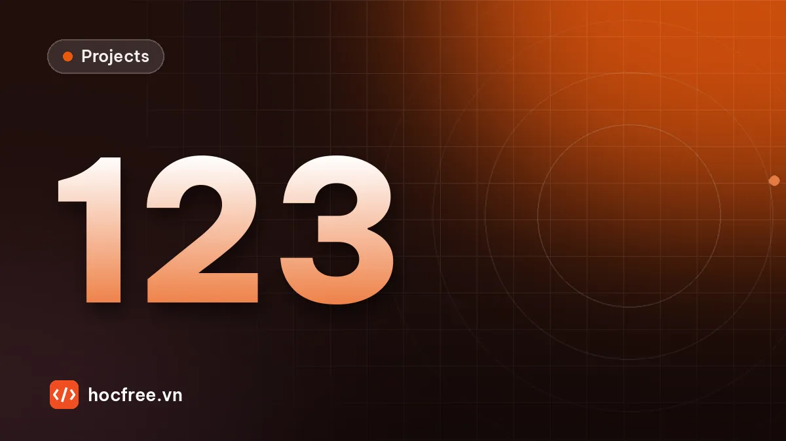

Dự án: đếm sản phẩm trên băng tải bằng OpenCV, không đếm trùng
Tạo video băng tải có đáp án, tách sản phẩm, theo dõi tâm để đếm mỗi vật đúng một lần qua vạch, thống kê theo phút, log CSV và ảnh minh chứng.

Học xong bài này, bạn sẽ
- Kết hợp phân ngưỡng, morphology, contour
- Đếm vật đi qua vạch không đếm trùng
- Xuất kết quả và ảnh minh chứng
Nên học trước: Biến đổi hình học: affine và phối cảnh
Nội dung bài viết
Đây là dự án tổng kết chặng 3. Bạn ghép những gì đã học, từ phân ngưỡng (bài "Phân ngưỡng và contour: đếm, đo vật thể"), làm sạch mặt nạ (bài "Morphology: erode, dilate, opening, closing"), đặc trưng contour, đến biến đổi tọa độ (bài "Biến đổi hình học: affine và phối cảnh"), thành một ứng dụng thật: đếm sản phẩm chạy trên băng tải, mỗi sản phẩm đúng một lần, thống kê sản lượng theo từng phút, lưu log và ảnh minh chứng. Bài toán nghe đơn giản nhưng chứa đủ các vấn đề của trạm vision thật: vân băng tải, đèn không đều, sản phẩm có băng keo làm mặt nạ bị đứt, nhiều sản phẩm cùng lúc trên hai làn, và câu hỏi khó nhất: làm sao biết vật ở khung hình này là vật nào ở khung hình trước để không đếm trùng. Toàn bộ dùng thuật toán cổ điển, không cần GPU.
opencv-python và numpy.1. Yêu cầu
| Hạng mục | Yêu cầu |
|---|---|
| Đầu vào | Video băng tải nhìn từ trên xuống, 640×240, 10 khung/giây, sản phẩm sáng chạy từ trái sang phải trên nền băng tải tối, 2 làn |
| Đếm | Mỗi sản phẩm đếm đúng một lần khi tâm của nó đi qua vạch dọc x = 320 |
| Độ chính xác | Trên video mẫu: tổng số đếm và số đếm mỗi phút khớp đáp án (sai số 0) |
| Thống kê | Số sản phẩm theo từng phút, lưu thong_ke_phut.csv và biểu đồ cột |
| Log | ket_qua.csv: số thứ tự, mã track, khung, thời điểm (s), phút, diện tích, tên ảnh minh chứng |
| Ảnh minh chứng | Mỗi sản phẩm được đếm có một ảnh cắt kèm khung và số thứ tự trong thư mục minh_chung/ |
| Cấu hình | Mọi tham số (ROI, ngưỡng, kernel, vạch, khoảng cách ghép) nằm trong một dict cấu hình, không rải trong code |
| Tốc độ | Xử lý nhanh hơn tốc độ khung hình của camera (trên 10 khung/giây) |
2. Chuẩn bị video mẫu có đáp án
Hàm dưới đây tạo video 3 phút. Mỗi làn sinh sản phẩm ngẫu nhiên với nhịp khác nhau theo từng phút (20, 30, rồi 15 sản phẩm/phút mỗi làn) để thống kê theo phút có ý nghĩa. Sản phẩm là các hộp sáng kích thước ngẫu nhiên; 25% hộp có băng keo tối dán dọc giữa (sẽ làm mặt nạ bị cắt đôi). Băng tải có vân chạy theo, đèn yếu dần về phía trái, có nhiễu cảm biến. Vì biết vị trí từng hộp ở mọi khung, ta tính được chính xác khung mà tâm hộp vượt qua vạch đếm.
import json
import cv2
import numpy as np
def tao_video_bang_tai(duong_dan="bang_tai.mp4", fps=10, so_phut=3, seed=0):
"""Video băng tải 640x240: hộp sáng chạy trái -> phải trên 2 làn. Lưu kèm đáp án JSON."""
rng = np.random.default_rng(seed)
W, H, V, VACH = 640, 240, 12, 320 # V: tốc độ băng tải (px/khung), VACH: vạch đếm
NHIP = [20, 30, 15] # sản phẩm/phút mỗi làn, theo từng phút
n_khung = fps * 60 * so_phut
hop = []
for y_lan in (80, 165):
k = int(rng.integers(0, 20))
while k < n_khung:
w, h = int(rng.integers(50, 81)), int(rng.integers(40, 66))
hop.append(dict(k0=k, y=y_lan + int(rng.integers(-8, 9)), w=w, h=h,
sang=int(rng.integers(170, 211)), keo=bool(rng.random() < 0.25)))
phut = min(k // (fps * 60), so_phut - 1)
tb = fps * 60 / NHIP[phut] # khoảng cách trung bình giữa 2 hộp (khung)
k += max(int(np.ceil((w + 25) / V)), int(rng.exponential(tb))) # cách nhau ít nhất 25 px
# Đáp án: tâm hộp tại khung k là x = -w/2 + V*(k - k0); khung đầu tiên x >= VACH
dap_an = []
for i, b in enumerate(hop):
kq = b["k0"] + int(np.ceil((VACH + b["w"] / 2) / V))
if kq < n_khung:
dap_an.append({"id": i, "khung": kq, "phut": kq // (fps * 60) + 1})
vw = cv2.VideoWriter(duong_dan, cv2.VideoWriter_fourcc(*"mp4v"), fps, (W, H))
den = np.tile(np.linspace(0.8, 1.0, W), (H, 1)) # đèn yếu dần về bên trái
for k in range(n_khung):
anh = np.full((H, W), 55, np.uint8)
for x in range((k * V) % 40 - 40, W, 40):
cv2.line(anh, (x, 0), (x, H - 1), 68, 2) # vân băng tải chạy theo
for b in hop:
cx = -b["w"] / 2 + V * (k - b["k0"])
if -b["w"] < cx < W + b["w"]:
x0, y0 = int(round(cx - b["w"] / 2)), b["y"] - b["h"] // 2
cv2.rectangle(anh, (x0, y0), (x0 + b["w"] - 1, y0 + b["h"] - 1), b["sang"], -1)
if b["keo"]: # băng keo tối rộng 7 px dán dọc giữa hộp
xm = x0 + b["w"] // 2
cv2.rectangle(anh, (xm - 3, y0), (xm + 3, y0 + b["h"] - 1), 60, -1)
anh = np.clip(anh * den + rng.normal(0, 4, (H, W)), 0, 255).astype(np.uint8)
vw.write(cv2.cvtColor(anh, cv2.COLOR_GRAY2BGR))
vw.release()
with open(duong_dan.rsplit(".", 1)[0] + "_dap_an.json", "w", encoding="utf-8") as f:
json.dump({"fps": fps, "vach_x": VACH, "san_pham": dap_an}, f)
return dap_an
dap_an = tao_video_bang_tai()
print("đáp án:", len(dap_an), "sản phẩm qua vạch |",
" | ".join(f"phút {p}: {sum(d['phut'] == p for d in dap_an)}" for p in (1, 2, 3)))đáp án: 119 sản phẩm qua vạch | phút 1: 36 | phút 2: 52 | phút 3: 31Việc tạo video mất khoảng 10–20 giây tùy máy, file khoảng 25 MB. Nếu OpenCV trên máy bạn không ghi được mp4v (file rỗng hoặc không mở được), đổi thành "bang_tai.avi" với cv2.VideoWriter_fourcc(*"MJPG"). Mở video bằng trình phát bất kỳ để xem trước: hộp có băng keo trông như hai nửa sáng tách nhau bởi một vạch tối.
3. Kiến thức sử dụng
| Bước | Kỹ thuật | Học ở bài |
|---|---|---|
| Cắt vùng băng tải | ROI bằng cắt mảng NumPy | ROI, resize, xoay, lật (chặng 2) |
| Tách sản phẩm | Làm mịn Gaussian, ngưỡng cố định | Lọc nhiễu và phát hiện cạnh; Phân ngưỡng và contour |
| Làm sạch mặt nạ | Opening xóa nhiễu, closing kernel ngang nối hai nửa hộp có băng keo | Morphology |
| Tìm vật và tâm | findContours, lọc diện tích, moments | Phân ngưỡng và contour; Đặc trưng contour |
| Theo dõi qua khung hình | Ghép tâm gần nhất có dự đoán vận tốc (centroid tracking) | Mới trong dự án này |
| Log, thống kê, ảnh minh chứng | CSV, vẽ lên ảnh, ghi ảnh | Đọc ghi file (chặng 1); Vẽ kết quả lên ảnh (chặng 2) |
4. Gợi ý thiết kế
4.1. Tách sản phẩm: ngưỡng cố định, không dùng Otsu
Băng tải có lúc trống hoàn toàn. Như cảnh báo ở bài phân ngưỡng, Otsu trên ảnh không có vật vẫn "tìm" ra một ngưỡng và cắt vân băng tải thành vật giả. Ở trạm có đèn được kiểm soát, ngưỡng cố định đặt giữa độ sáng băng tải (khoảng 45–70) và sản phẩm (khoảng 135–210 sau khi tính đèn yếu bên trái) ổn định hơn nhiều. Chọn 110, nằm giữa hai nhóm.
4.2. Băng keo cắt đôi mặt nạ
Một hộp có băng keo tối rộng 7 px cho mặt nạ gồm hai nửa: đếm contour sẽ ra 2 vật. Closing với kernel ngang rộng hơn khe (15×5) nối hai nửa lại mà không làm hộp phình theo chiều dọc, đúng kỹ thuật kernel một chiều của bài Morphology. Kernel phải nhỏ hơn khoảng cách giữa hai hộp liên tiếp (ít nhất 25 px trong video mẫu), nếu không hai hộp sát nhau sẽ bị nối thành một.
4.3. Không đếm trùng: theo dõi tâm qua các khung
Một hộp xuất hiện trong khoảng 50 khung hình liên tiếp. Nếu mỗi khung chỉ hỏi "có vật nào gần vạch không" thì một hộp sẽ được đếm nhiều lần, hoặc không lần nào nếu nó "nhảy" qua vùng gần vạch giữa hai khung. Cách đúng là gán cho mỗi vật một mã track ổn định qua các khung:
- Dự đoán: vị trí mới của mỗi track ≈ vị trí cũ + vận tốc khung trước (băng tải chạy đều nên dự đoán rất tốt).
- Ghép: tính khoảng cách giữa mọi cặp (track dự đoán, vật mới), chỉ xét cặp gần hơn
max_dist, ghép cặp gần nhất trước (tham lam), mỗi track và mỗi vật chỉ ghép một lần. - Vật chưa ghép thành track mới. Track không được ghép được giữ thêm
max_matkhung (vật có thể mất một khung vì nhiễu, lóa) rồi mới xóa. - Đếm khi vị trí trước đó của track ở bên trái vạch và vị trí hiện tại ở bên phải hoặc trên vạch, và track chưa được đếm. Cờ
da_demlà thứ chặn đếm trùng, kể cả khi tâm dao động qua lại quanh vạch.
Chọn max_dist: lớn hơn sai số dự đoán (vài pixel do làm mịn, hộp mới vào khung chưa có vận tốc thì sai số bằng tốc độ băng tải 12 px), nhỏ hơn nhiều so với khoảng cách giữa hai hộp gần nhau (khoảng 60 px trở lên). Giá trị 40 px nằm giữa.
4.4. Thời gian và thống kê theo phút
Với video, thời điểm của sản phẩm = số thứ tự khung / fps. Với camera chạy thật, dùng đồng hồ hệ thống (datetime.now()) tại thời điểm chụp; phút thống kê là phút theo giờ thật. Ghi log mỗi sản phẩm một dòng, rồi thống kê từ log: tách "thu thập dữ liệu" khỏi "báo cáo" giúp bạn tính lại báo cáo bất cứ lúc nào mà không cần chạy lại video.
5. Lời giải mẫu
Xem lời giải đầy đủ (dem_bang_tai.py, thống kê theo phút, kiểm tra với đáp án)
Chương trình chính. Đặt HIEN_THI = True để xem trực tiếp (nhấn q để dừng); mặc định tắt để chạy nhanh hết video. Phần cuối chạy lại hai cấu hình "sai có chủ đích" để thấy vai trò của closing và tracker.
import csv
import os
import time
import cv2
import numpy as np
CAU_HINH = {
"video": "bang_tai.mp4",
"roi": (0, 10, 640, 220), # x, y, w, h của dải băng tải
"nguong": 110, # ngưỡng cố định: băng tải ~45-70, sản phẩm ~135-210
"k_mo": 5, # opening xóa nhiễu
"k_dong": (15, 5), # closing ngang: nối hai nửa hộp có băng keo (khe 7 px)
"dien_tich_min": 1200, # hộp nhỏ nhất 50x40 = 2000 px²
"vach_x": 320, # vạch đếm (tọa độ ảnh)
"max_dist": 40, # khoảng cách ghép tối đa (px)
"max_mat": 3, # số khung được phép mất dấu
"thu_muc_minh_chung": "minh_chung",
"file_log": "ket_qua.csv",
}
HIEN_THI = False
THI_NGHIEM = True
def tach_vat(gray, ch):
"""Trả về danh sách (cx, cy, diện tích, (x, y, w, h)) theo tọa độ ảnh đầy đủ."""
x, y, w, h = ch["roi"]
roi = cv2.GaussianBlur(gray[y:y + h, x:x + w], (5, 5), 0)
_, m = cv2.threshold(roi, ch["nguong"], 255, cv2.THRESH_BINARY)
if ch["k_mo"] > 1:
m = cv2.morphologyEx(m, cv2.MORPH_OPEN,
cv2.getStructuringElement(cv2.MORPH_ELLIPSE, (ch["k_mo"], ch["k_mo"])))
if ch["k_dong"]:
m = cv2.morphologyEx(m, cv2.MORPH_CLOSE, cv2.getStructuringElement(cv2.MORPH_RECT, ch["k_dong"]))
cs, _ = cv2.findContours(m, cv2.RETR_EXTERNAL, cv2.CHAIN_APPROX_SIMPLE)
ds = []
for c in cs:
A = cv2.contourArea(c)
if A < ch["dien_tich_min"]:
continue
M = cv2.moments(c)
bx, by, bw, bh = cv2.boundingRect(c)
ds.append((M["m10"] / M["m00"] + x, M["m01"] / M["m00"] + y, A, (bx + x, by + y, bw, bh)))
return ds
class TrackerTam:
"""Theo dõi tâm vật: dự đoán theo vận tốc, ghép tham lam theo khoảng cách."""
def __init__(self, max_dist, max_mat):
self.tracks, self.id_tiep, self.max_dist, self.max_mat = {}, 1, max_dist, max_mat
def cap_nhat(self, ds):
cap = []
for tid, t in self.tracks.items():
px, py = t["x"] + t["vx"], t["y"] # vị trí dự đoán
for j, v in enumerate(ds):
d = float(np.hypot(v[0] - px, v[1] - py))
if d < self.max_dist:
cap.append((d, tid, j))
cap.sort()
track_da_ghep, vat_da_ghep = set(), set()
for d, tid, j in cap: # cặp gần nhất được ghép trước
if tid in track_da_ghep or j in vat_da_ghep:
continue
track_da_ghep.add(tid)
vat_da_ghep.add(j)
t = self.tracks[tid]
t.update(x_truoc=t["x"], vx=ds[j][0] - t["x"], x=ds[j][0], y=ds[j][1], mat=0, vat=ds[j])
for tid in list(self.tracks):
if tid not in track_da_ghep:
self.tracks[tid]["mat"] += 1
if self.tracks[tid]["mat"] > self.max_mat:
del self.tracks[tid]
for j, v in enumerate(ds):
if j not in vat_da_ghep: # vật mới vào khung
self.tracks[self.id_tiep] = dict(x=v[0], y=v[1], vx=0.0, x_truoc=None,
mat=0, da_dem=False, vat=v)
self.id_tiep += 1
return self.tracks
def luu_minh_chung(frame, vat, stt, ch):
bx, by, bw, bh = vat[3]
x0, y0 = max(bx - 20, 0), max(by - 20, 0)
cat = frame[y0:by + bh + 20, x0:bx + bw + 20].copy()
cv2.rectangle(cat, (bx - x0, by - y0), (bx - x0 + bw - 1, by - y0 + bh - 1), (0, 255, 0), 1)
cv2.putText(cat, f"#{stt}", (3, 14), cv2.FONT_HERSHEY_SIMPLEX, 0.45, (0, 0, 255), 1)
ten = f"sp_{stt:04d}.jpg"
cv2.imwrite(os.path.join(ch["thu_muc_minh_chung"], ten), cat)
return ten
def chay(ch, ghi_log=True):
cap = cv2.VideoCapture(ch["video"])
if not cap.isOpened():
raise FileNotFoundError(f"không mở được video {ch['video']}")
fps = cap.get(cv2.CAP_PROP_FPS) or 10.0
tracker = TrackerTam(ch["max_dist"], ch["max_mat"])
dem, k, frame = [], -1, None
if ghi_log:
os.makedirs(ch["thu_muc_minh_chung"], exist_ok=True)
while True:
ok, frame_moi = cap.read()
if not ok:
break
frame, k = frame_moi, k + 1
gray = cv2.cvtColor(frame, cv2.COLOR_BGR2GRAY)
for tid, t in tracker.cap_nhat(tach_vat(gray, ch)).items():
if (not t["da_dem"] and t["mat"] == 0 and t["x_truoc"] is not None
and t["x_truoc"] < ch["vach_x"] <= t["x"]):
t["da_dem"] = True
stt = len(dem) + 1
ten_anh = luu_minh_chung(frame, t["vat"], stt, ch) if ghi_log else ""
dem.append({"stt": stt, "id_track": tid, "khung": k, "thoi_gian_s": round(k / fps, 1),
"phut": int(k / fps // 60) + 1, "dien_tich": int(t["vat"][2]), "anh": ten_anh})
if HIEN_THI:
ve = frame.copy()
cv2.line(ve, (ch["vach_x"], 0), (ch["vach_x"], ve.shape[0] - 1), (0, 255, 255), 2)
for tid, t in tracker.tracks.items():
mau = (0, 255, 0) if t["da_dem"] else (0, 0, 255)
cv2.circle(ve, (int(t["x"]), int(t["y"])), 4, mau, -1)
cv2.putText(ve, str(tid), (int(t["x"]) + 6, int(t["y"])), cv2.FONT_HERSHEY_SIMPLEX, 0.4, mau, 1)
cv2.putText(ve, f"Dem: {len(dem)}", (10, 25), cv2.FONT_HERSHEY_SIMPLEX, 0.8, (0, 255, 255), 2)
cv2.imshow("Dem san pham", ve)
if cv2.waitKey(1) & 0xFF == ord("q"):
break
cap.release()
if HIEN_THI:
cv2.destroyAllWindows()
if ghi_log:
with open(ch["file_log"], "w", newline="", encoding="utf-8") as f:
w = csv.DictWriter(f, fieldnames=["stt", "id_track", "khung", "thoi_gian_s", "phut", "dien_tich", "anh"])
w.writeheader()
w.writerows(dem)
return dem, k + 1, fps
bat_dau = time.perf_counter()
dem, so_khung, fps = chay(CAU_HINH)
giay = time.perf_counter() - bat_dau
print(f"đã xử lý {so_khung} khung ({so_khung / fps:.0f} s video), đếm được {len(dem)} sản phẩm")
print(f"tốc độ xử lý: {so_khung / giay:.0f} khung/s (thay đổi theo máy)")
print("5 dòng log đầu:", [(d["stt"], d["thoi_gian_s"], d["dien_tich"]) for d in dem[:5]])
if THI_NGHIEM:
for ten, thay_doi in [("không closing", {"k_dong": None}), ("max_dist = 8", {"max_dist": 8})]:
d2, _, _ = chay(dict(CAU_HINH, **thay_doi), ghi_log=False)
print(f"thí nghiệm {ten:14s}: đếm được {len(d2)}")đã xử lý 1800 khung (180 s video), đếm được 119 sản phẩm
tốc độ xử lý: 1333 khung/s (thay đổi theo máy)
5 dòng log đầu: [(1, 4.7, 3530), (2, 4.8, 2388), (3, 6.2, 2744), (4, 10.2, 3789), (5, 11.0, 2814)]
thí nghiệm không closing : đếm được 139
thí nghiệm max_dist = 8 : đếm được 72Đọc kết quả:
- Cấu hình đúng đếm đúng bằng đáp án ở mục 2. Tốc độ xử lý trên máy thông thường cao hơn nhiều lần mức 10 khung/s cần thiết, còn dư cho camera nhanh hơn hoặc ảnh lớn hơn.
- Không closing: mỗi hộp có băng keo thành hai vật, hai track, hai lần đếm: đếm thừa. Đây là lỗi kinh điển "một vật đếm hai lần do phản xạ hoặc nhãn tối".
max_distquá nhỏ (8 px): khi hộp mới vào khung chưa có vận tốc, dự đoán lệch 12 px nên không ghép được; track cũ bị xóa, track mới sinh ra không có vị trí trước đúng lúc qua vạch, nên đếm thiếu. Đếm trùng và đếm sót đều đến từ việc chọn tham số tracker không dựa trên số liệu (tốc độ băng tải, khoảng cách giữa vật).- Điều kiện
t["mat"] == 0đảm bảo chỉ đếm khi vật thật sự được nhìn thấy ở khung hiện tại, vàx_truocluôn là vị trí ghép được gần nhất.
Thống kê theo từng phút (bài thực hành của dự án). Khối này chỉ đọc log CSV, nên chạy lại được bất cứ lúc nào:
import csv
from collections import Counter
import cv2
import numpy as np
with open("ket_qua.csv", encoding="utf-8") as f:
log = list(csv.DictReader(f))
theo_phut = Counter(int(d["phut"]) for d in log)
cac_phut = list(range(1, max(theo_phut, default=0) + 1))
with open("thong_ke_phut.csv", "w", newline="", encoding="utf-8") as f:
w = csv.writer(f)
w.writerow(["phut", "so_san_pham"])
for p in cac_phut:
w.writerow([p, theo_phut[p]])
print("phút | sản phẩm")
for p in cac_phut:
print(f"{p:4d} | {theo_phut[p]:4d} " + "#" * (theo_phut[p] // 2))
if cac_phut:
print(f"tổng {len(log)} | trung bình {len(log) / len(cac_phut):.1f} sp/phút | "
f"cao nhất phút {max(cac_phut, key=lambda p: theo_phut[p])}")
# Biểu đồ cột bằng OpenCV để đính kèm báo cáo ca
bd = np.full((220, 60 + 80 * max(len(cac_phut), 1), 3), 255, np.uint8)
cao_max = max(theo_phut.values(), default=1)
for i, p in enumerate(cac_phut):
h = int(150 * theo_phut[p] / cao_max)
cv2.rectangle(bd, (40 + 80 * i, 180 - h), (90 + 80 * i, 180), (200, 120, 40), -1)
cv2.putText(bd, str(theo_phut[p]), (48 + 80 * i, 172 - h), cv2.FONT_HERSHEY_SIMPLEX, 0.5, (0, 0, 0), 1)
cv2.putText(bd, f"P{p}", (52 + 80 * i, 200), cv2.FONT_HERSHEY_SIMPLEX, 0.5, (0, 0, 0), 1)
cv2.imwrite("bieu_do_phut.png", bd)phút | sản phẩm
1 | 36 ##################
2 | 52 ##########################
3 | 31 ###############
tổng 119 | trung bình 39.7 sp/phút | cao nhất phút 2Kiểm tra với đáp án. So tổng, so từng phút, và so khung đếm của từng sản phẩm (ghép theo thứ tự thời gian) để biết chương trình đếm sớm hay muộn bao nhiêu:
import csv
import json
from collections import Counter
with open("ket_qua.csv", encoding="utf-8") as f:
log = list(csv.DictReader(f))
dap_an = json.load(open("bang_tai_dap_an.json", encoding="utf-8"))["san_pham"]
that = Counter(d["phut"] for d in dap_an)
do = Counter(int(d["phut"]) for d in log)
print("phút | đáp án | đếm được | lệch")
for p in sorted(set(that) | set(do)):
print(f"{p:4d} | {that[p]:6d} | {do[p]:8d} | {do[p] - that[p]:+4d}")
print(f"tổng | {len(dap_an):6d} | {len(log):8d} | {len(log) - len(dap_an):+4d}")
if len(log) == len(dap_an):
lech = Counter(int(a["khung"]) - b for a, b in zip(log, sorted(d["khung"] for d in dap_an)))
print("độ lệch khung đếm so với đáp án:", dict(sorted(lech.items())))phút | đáp án | đếm được | lệch
1 | 36 | 36 | +0
2 | 52 | 52 | +0
3 | 31 | 31 | +0
tổng | 119 | 119 | +0
độ lệch khung đếm so với đáp án: {0: 111, 1: 8}Số đếm khớp tuyệt đối theo phút. Một số sản phẩm được đếm lệch một khung so với đáp án: đáp án dùng tâm hình học của hộp, còn chương trình dùng trọng tâm mặt nạ sau làm mịn và morphology, có thể lệch vài phần pixel, đủ để vượt vạch sớm hoặc muộn một khung (0,1 s). Với thống kê theo phút, lệch này chỉ có ảnh hưởng khi sản phẩm qua vạch đúng ranh giới phút; với tín hiệu gửi PLC để gạt sản phẩm, 0,1 s ở 120 px/s tương đương 12 px, phải tính đến khi thiết kế vị trí cơ cấu gạt (chặng 5, bài trigger, encoder và cycle time).
6. Tự đánh giá
| Tiêu chí | Đạt khi | Tự kiểm tra |
|---|---|---|
| Đếm đúng tổng | Khớp đáp án trên video mẫu | Khối kiểm tra với đáp án, dòng "tổng" lệch +0 |
| Đúng theo phút | Cả 3 phút lệch 0 | Bảng so sánh theo phút |
| Không đếm trùng | Hộp có băng keo đếm 1 lần; tâm dao động quanh vạch không đếm thêm | Tắt closing phải thấy đếm thừa; bật lại phải khớp |
| Không đếm sót | Vật mất dấu 1–3 khung vẫn được đếm | Thử xóa ngẫu nhiên 5% khung (bỏ qua khung khi đọc) và kiểm tra lại |
| Tham số có căn cứ | Mỗi tham số giải thích được bằng số đo (độ sáng, tốc độ, khoảng cách) | Viết một dòng chú thích lý do cho từng khóa trong cấu hình |
| Log và minh chứng | CSV đủ cột; số ảnh trong minh_chung/ bằng số dòng log | Đếm file, mở ngẫu nhiên vài ảnh |
| Tốc độ | Trên 10 khung/s với video 640×240 | Dòng "tốc độ xử lý" |
| Bền vững | Không lỗi khi video không mở được, khi băng tải trống, khi hết video | Đổi tên file video, chạy video toàn khung đen |
7. Mở rộng
- Đổi ngưỡng cố định thành ngưỡng có giám sát: theo dõi độ sáng trung bình của vùng băng tải trống như bài histogram, cảnh báo khi đèn yếu thay vì để số đếm sai dần.
- Phân loại khi đếm: dùng diện tích và khung xoay (bài Đặc trưng contour) để đếm riêng hộp nhỏ, hộp lớn, hoặc báo NG khi kích thước ngoài dung sai; dùng
minAreaRectđể báo hộp nằm lệch góc. - Đổi đơn vị sang mm: với homography từ bài Biến đổi hình học, đổi tâm và kích thước hộp sang mm trên mặt băng tải.
- Theo encoder thay vì thời gian: băng tải thật thay đổi tốc độ; dùng xung encoder để biết quãng đường, và gửi vị trí sản phẩm cho cơ cấu gạt (chặng 5).
- Gửi số đếm cho PLC qua Modbus TCP và lưu log vào SQLite (chặng 9).
- Vật dính nhau: tạo video có hộp chạm nhau, thêm bước tách bằng diện tích hoặc watershed (bài Watershed), và đo xem đếm thiếu bao nhiêu.
- Sản phẩm đa dạng, nền phức tạp: thay bước tách vật bằng mô hình object detection (chặng 12) và giữ nguyên phần tracker, đếm qua vạch, log.
Hoàn thành dự án này, bạn đã có một pipeline xử lý ảnh cổ điển hoàn chỉnh. Chặng 4 sẽ nhìn bức tranh lớn hơn: một hệ thống Machine Vision gồm những thành phần gì ngoài phần mềm xử lý ảnh.
Bài tập thực hành
- Chạy mã nguồn dự án với video mẫu, sau đó thêm thống kê số sản phẩm theo từng phút.
Làm xong bài tập mới chuyển sang bài tiếp theo: tự viết code là cách duy nhất để nhớ lâu.